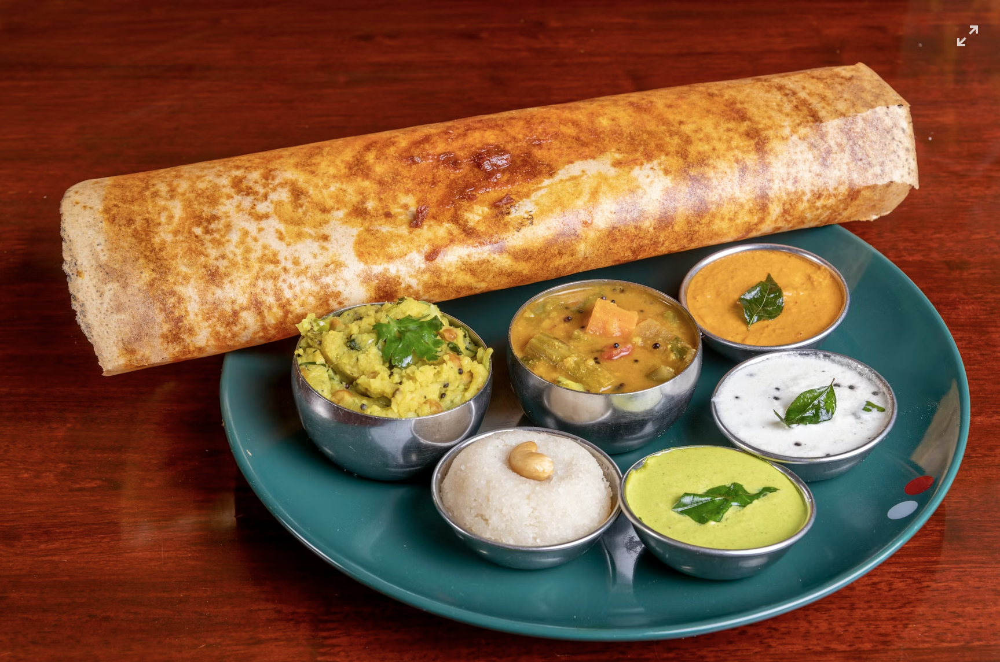

Home
Dosa Recipe

Description
This crispy dosa recipe is a popular South Indian dish made from fermented rice and lentil batter.
Prep Time: 15 minutes | Cook Time: 20 minutes | Servings: 4
Ingredients
- 1 cup rice
- 1/4 cup urad dal (split black gram)
- 1/4 teaspoon fenugreek seeds
- Salt, to taste
- Oil, for cooking
Instructions
- Soak rice, urad dal, and fenugreek seeds in water for 4-6 hours.
- Drain and blend the soaked ingredients with water to a smooth batter.
- Ferment the batter overnight in a warm place.
- Heat a non-stick skillet and pour a ladleful of batter, spreading it into a thin circle.
- Drizzle oil around the edges and cook until golden brown.
- Flip and cook the other side for a minute.
- Serve hot with chutney and sambar.